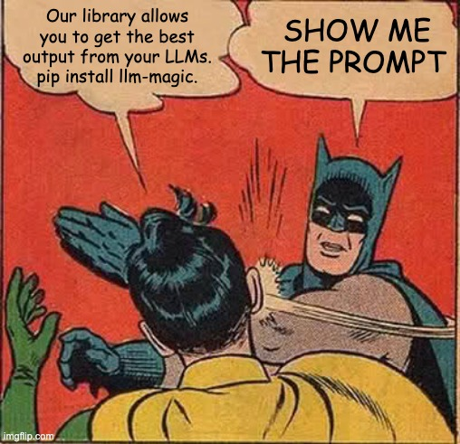

2. 自己掌握提示（Own your prompts）
不要把提示工程外包給框架。

順帶一提，這完全不是什麼新穎的建議。

有些框架提供這種「黑箱」做法：
agent = Agent(
role="...",
goal="...",
personality="...",
tools=[tool1, tool2, tool3]
)
task = Task(
instructions="...",
expected_output=OutputModel
)
result = agent.run(task)這對於想一開始就套用頂尖提示工程的人來說很好用，但要微調、或想逆向工程出「哪些 token 真的進了模型」，通常很困難。
換個做法：自己掌握提示，把它當成一等公民的程式碼看待。
function DetermineNextStep(thread: string) -> DoneForNow | ListGitTags | DeployBackend | DeployFrontend | RequestMoreInformation {
prompt #"
{{ _.role("system") }}
You are a helpful assistant that manages deployments for frontend and backend systems.
You work diligently to ensure safe and successful deployments by following best practices
and proper deployment procedures.
Before deploying any system, you should check:
- The deployment environment (staging vs production)
- The correct tag/version to deploy
- The current system status
You can use tools like deploy_backend, deploy_frontend, and check_deployment_status
to manage deployments. For sensitive deployments, use request_approval to get
human verification.
Always think about what to do first, like:
- Check current deployment status
- Verify the deployment tag exists
- Request approval if needed
- Deploy to staging before production
- Monitor deployment progress
{{ _.role("user") }}
{{ thread }}
What should the next step be?
"#
}（上面這個例子用 BAML 產生提示，但你可以用任何提示工程工具，甚至手動套模板也行。）
如果這個函式簽名看起來有點怪，我們會在要素 4：工具就只是結構化輸出談到。
function DetermineNextStep(thread: string) -> DoneForNow | ListGitTags | DeployBackend | DeployFrontend | RequestMoreInformation {自己掌握提示的關鍵好處：
- 完全的控制權：精確寫出代理需要的指令，沒有黑箱抽象
- 測試與評估：像對待其他程式碼一樣，為提示建立測試與評估
- 迭代：根據真實世界的表現快速修改提示
- 透明：確切知道代理收到什麼指令
- 角色挪用（Role Hacking）：利用那些支援非標準 user／assistant 角色用法的 API，例如 OpenAI 現已棄用的非 chat 版「completions」API。這也包含一些所謂的「模型煤氣燈效應（model gaslighting）」技巧
記住：提示是你的應用邏輯與 LLM 之間的主要介面。
完全掌握提示，才能擁有生產級代理需要的彈性與控制力。
我不知道最好的提示長什麼樣，但我知道你會想要能嘗試所有做法的彈性。